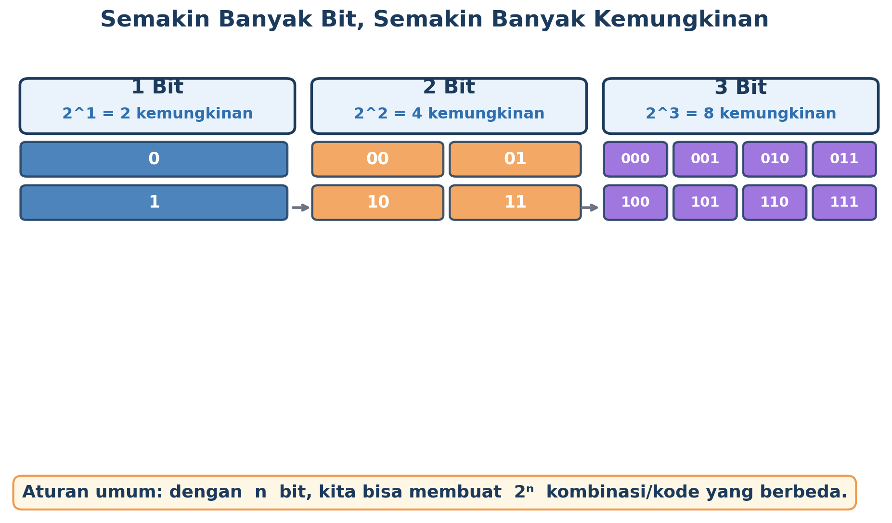
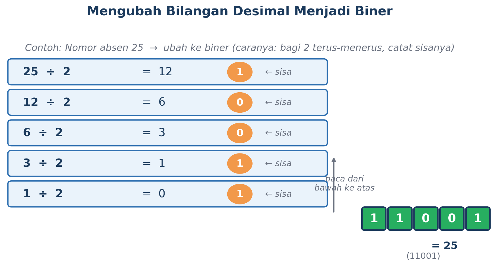
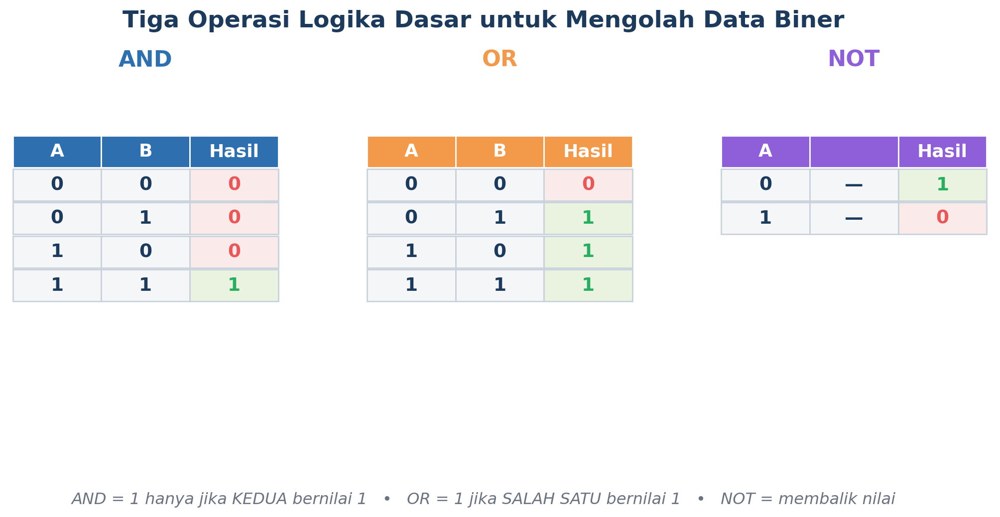
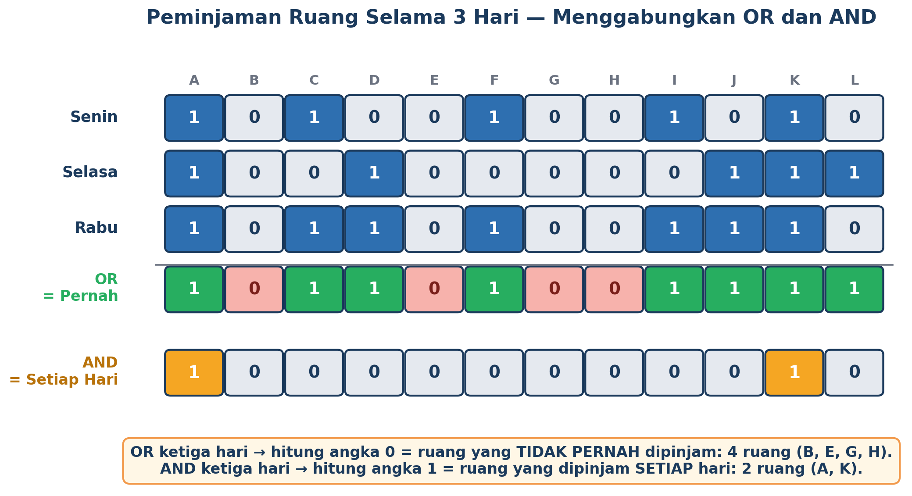
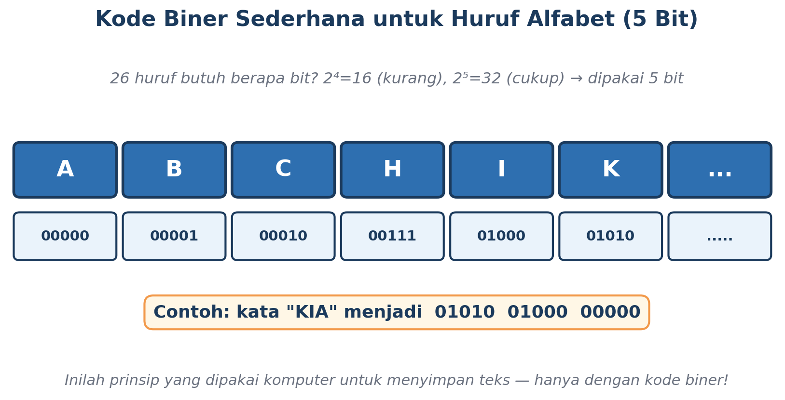
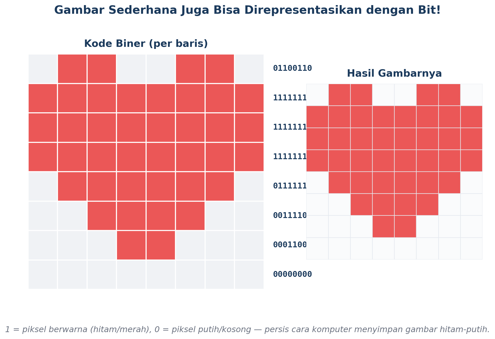

Yuk, Naik Level!
Di pertemuan lalu, kamu sudah kenalan sama bit (si 0 dan 1), belajar mengubah kondisi sehari-hari jadi kode biner, dan berhasil jadi "detektif data" pakai operasi OR untuk menemukan ruang yang nggak pernah dipinjam. Keren banget!
Sekarang saatnya naik level. Kita akan belajar kenapa 1 bit itu terbatas, cara mengubah angka desimal biasa jadi biner, dua "alat berpikir" baru selain OR (namanya AND dan NOT), sampai fakta mengejutkan bahwa huruf dan gambar di HP kamu ternyata cuma kumpulan angka 0 dan 1 juga!
Semakin Banyak Bit, Semakin Banyak Kemungkinan
Ingat, 1 bit cuma punya 2 kemungkinan: 0 atau 1. Tapi kalau kita pakai 2 bit sekaligus, kombinasinya jadi lebih banyak: 00, 01, 10, 11 — ada 4 kemungkinan! Kalau kita tambah lagi jadi 3 bit, kombinasinya melonjak jadi 8 kemungkinan.

Polanya ternyata gampang ditebak: kalau kita punya n bit, banyaknya kombinasi yang bisa dibuat adalah 2 pangkat n (2ⁿ). Makanya, kalau kita mau merepresentasikan sesuatu yang punya banyak kemungkinan (bukan cuma ya/tidak), kita tinggal tambah jumlah bit-nya.
Mengubah Angka Biasa (Desimal) Jadi Biner
Angka yang biasa kita pakai sehari-hari (0, 1, 2, 3, ... 9, 10, dst.) disebut bilangan desimal. Ternyata, angka desimal ini juga bisa diubah jadi kode biner, lho! Caranya gampang: bagi angkanya dengan 2 secara berulang-ulang, lalu catat sisa baginya.

- Bagi angkanya dengan 2, catat hasil bagi dan sisanya (
0atau1). - Ulangi pembagian itu pada hasil baginya, sampai hasil baginya menjadi 0.
- Susun semua sisa pembagian itu dari BAWAH ke ATAS — itulah kode binernya!
Contoh: nomor absen 25 kalau diubah ke biner jadi 11001. Coba cek gambar di atas untuk melihat prosesnya langkah demi langkah.
Kenalan Sama AND dan NOT
Pertemuan lalu kamu sudah jago pakai operasi OR. Sekarang, waktunya nambah koleksi "alat berpikir" biner kamu dengan dua operasi baru: AND dan NOT.

Operasi AND — "Harus Dua-duanya!"
Operasi AND hasilnya bernilai 1 HANYA JIKA kedua data yang dibandingkan sama-sama bernilai 1. Kalau salah satu saja bernilai 0, hasil AND-nya langsung 0. AND cocok dipakai kalau kamu ingin mencari sesuatu yang berlaku di SEMUA kondisi sekaligus (disebut irisan).
Operasi NOT — "Kebalikannya!"
Operasi NOT cuma butuh satu data saja, dan tugasnya sederhana: membalik nilainya. Kalau awalnya 1, NOT mengubahnya jadi 0. Kalau awalnya 0, NOT mengubahnya jadi 1. NOT berguna kalau kita ingin mencari kebalikan dari suatu kondisi.
Peminjaman Ruang Selama 3 Hari!
Kalau pertemuan lalu kita cuma membandingkan data 2 hari (Senin dan Selasa), sekarang datanya nambah jadi 3 hari: Senin, Selasa, dan Rabu. Yuk kita gunakan OR dan AND sekaligus untuk membongkar dua misteri baru!
Kode hari Senin:
Kode hari Selasa:
Kode hari Rabu:

Misteri 1 — Ruang yang TIDAK PERNAH dipinjam (pakai OR)
Sama seperti sebelumnya, kita gabungkan ketiga data hari itu dengan OR. Hasilnya, angka 0 yang tersisa menunjukkan ruang yang benar-benar nggak pernah dipakai sama sekali selama 3 hari:
Jawabannya 4 ruang: B, E, G, dan H tidak pernah dipinjam.
Misteri 2 — Ruang yang dipinjam SETIAP hari (pakai AND)
Ini pertanyaan baru yang nggak bisa dijawab pakai OR. Kita perlu operasi AND supaya hasilnya bernilai 1 hanya kalau ruang itu dipinjam di KETIGA hari sekaligus:
Hasilnya: cuma 2 ruang yang dipinjam setiap hari, yaitu Ruang A dan Ruang K!
Ternyata, Huruf dan Gambar Juga Cuma Bit!
Sekarang bagian paling seru: ternyata prinsip bit yang sama dipakai buat menyimpan HURUF dan GAMBAR di komputer atau HP kamu, bukan cuma angka atau status ruang.
Kode Biner untuk Huruf
Karena alfabet punya 26 huruf, kita butuh cukup banyak bit supaya semua huruf punya kode uniknya sendiri. Dengan 5 bit, kita bisa membuat 2⁵ = 32 kombinasi — lebih dari cukup untuk 26 huruf!

Coba lihat contoh kata "KIA" pada gambar — setiap hurufnya diubah jadi kode biner 5-bit masing-masing, lalu digabung berurutan. Begitulah cara komputer menyimpan teks: sebenarnya semua tulisan yang kamu ketik disimpan sebagai deretan panjang angka 0 dan 1!
Kode Biner untuk Gambar
Gambar digital paling sederhana (hitam-putih) juga bisa direpresentasikan dengan bit: 1 untuk piksel yang berwarna, dan 0 untuk piksel yang kosong/putih.

Setiap baris pada gambar itu punya kode binernya sendiri. Kalau kode-kode itu digabungkan lalu "digambar ulang" sesuai polanya, jadilah gambar hati yang kamu lihat. Gambar-gambar di HP kamu yang jauh lebih detail dan berwarna sebenarnya memakai prinsip yang sama, hanya dengan jauh lebih banyak piksel dan bit per piksel.
Rangkuman — Yang Perlu Kamu Ingat
- Aturan 2ⁿ menentukan banyaknya kemungkinan yang bisa dibuat dari n bit — semakin banyak bit, semakin banyak kombinasi.
- Bilangan desimal dapat diubah menjadi biner dengan cara membagi berulang-ulang dengan 2, lalu membaca sisa baginya dari bawah ke atas.
- Operasi AND hasilnya 1 hanya jika KEDUA data bernilai 1 (mencari irisan/kesamaan).
- Operasi NOT membalik nilai suatu data: 1 menjadi 0, dan 0 menjadi 1.
- OR dan AND bisa digabungkan untuk menganalisis lebih dari dua himpunan data sekaligus, misalnya data 3 hari.
- Prinsip bit yang sama dipakai untuk merepresentasikan angka, huruf/teks, maupun gambar sederhana di dalam komputer.
Kata Kunci
| Istilah | Penjelasan |
|---|---|
| Aturan 2ⁿ | Rumus untuk menghitung banyaknya kombinasi yang dapat dibuat dari n bit. |
| Konversi Biner | Proses mengubah bilangan desimal menjadi kode biner, misalnya dengan pembagian berulang dengan 2. |
| Operasi AND | Operasi logika yang hasilnya 1 hanya jika kedua data yang dibandingkan bernilai 1. |
| Operasi NOT | Operasi logika yang membalik nilai satu data: 1 menjadi 0, dan sebaliknya. |
| Piksel | Kotak kecil terkecil penyusun sebuah gambar digital. |
Yuk, Cek Pemahamanmu!
Coba jawab dulu di kepalamu atau di buku catatan, baru klik tombol untuk melihat kunci jawabannya.
Setelah ini, lanjutkan diskusi bersama kelompokmu lewat LKPD "Investigasi Peminjaman Ruang 3 Hari & Kode Rahasia" yang diberikan gurumu.